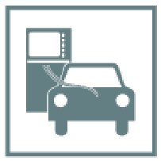

Steering Angle Sensor: Adjustments
61 31 996 - Carrying out steering angle sensor adjustment

Important!
In vehicles with active front steering, steering angle sensor adjustment is integrated in the service function "Initial operation/adjustment for active front steering" and must not be carried out separately!

Note:
Steering angle sensor adjustment must be carried out:
- after adjustment work on the front axle/steering
- after all mechanical work on the steering system
- E46 (AWD), E53, E83: after disconnection of battery
- after replacement/coding/programming of the following components:
- Fixture for switches of steering column/switch cluster/steering angle sensor
- Dynamic Stability Control (DSC) control unit
- Control unit active anti-roll stabilization (ARS)

Connect vehicle to BMW diagnosis system or Software Service Station.
Select and carry out steering angle sensor adjustment under Service functions.